Kaufhilfen für Babys und Kleinkinder
Finden, was wirklich zu eurem Alltag passt.
Von altersgerechtem Spielzeug bis zum Kinderwagen: nachvollziehbar recherchiert, transparent bewertet und ohne pauschale Bestenauszeichnung.
- Affiliate-Links klar gekennzeichnet
- Von einem Vater für Familien
- Auch Gegenempfehlungen
- Regelmäßig aktualisiert
Schnell gefunden
Womit können wir dir gerade helfen?
Starte bei Alter, Anlass, Budget oder eurem Alltag unterwegs.Jetzt im Herbst
Ein Geschenk, das wirklich zum Kind passt
Nach Alter, Anlass und Budget auswählen oder direkt zu den aktuellen Weihnachtsideen springen.
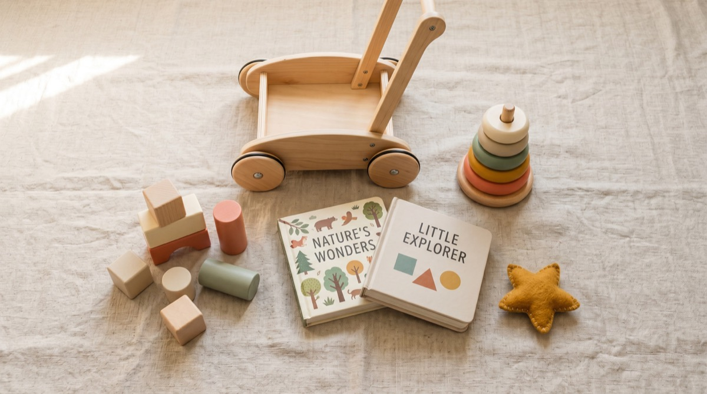
Geschenke für Kleinkinder finden
Eine übersichtliche Auswahl für Geburtstage, Weihnachten und Besuche, auch wenn du das Kind kaum kennst.
Zum Geschenk-HubWeihnachtsgeschenke für 1 bis 3 Jahre
Drei ausgewählte Ideen zum Vorlesen, Bauen und gemeinsamen Entdecken.
Herbst drinnenVorhandenes Spielzeug neu entdecken
Ein 15-Minuten-Plan für eine überschaubare Auswahl ohne neuen Kaufdruck.
Advent gemeinsam planen24 kleine Momente statt 24 neuer Dinge
Ein Kalender mit Büchern, Liedern und Spielzeug, das schon da ist.
Du suchst nach einer bestimmten Alltagssituation?
Nach Alter des Kindes
Wähle die Altersphase so, wie du sie im Alltag nennst. Die genaue Monatsangabe steht direkt dabei.
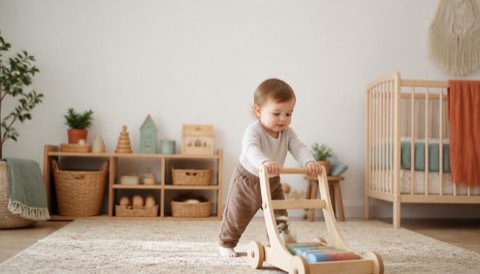
Die besten Empfehlungen für 12–18 Monate alte Kinder
Motorik, Sprache, Entdeckerfreude: was wirklich fördert und worauf du achten solltest.
Jetzt lesen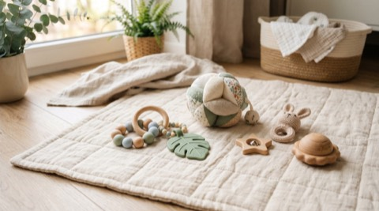
Ideen für 6–12 Monate – Förderung in der Krabbelphase
In der Krabbelphase stehen Greifen, Bewegen und Wahrnehmen im Mittelpunkt. Diese Auswahl ordnet passende Spielideen ein.
Jetzt lesen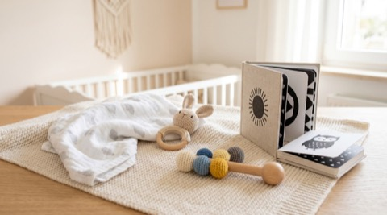
0–6 Monate – was Babys wirklich brauchen
Greifen, schauen, fühlen: sinnvolle erste Begleiter für die ersten Lebensmonate.
Jetzt lesen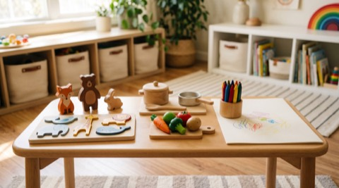
Spielzeug für 18–24 Monate – zwischen Entdecken und Nachahmen
Diese Phase braucht Dinge, die Sprache, Rollenspiel und Feinmotorik sinnvoll verbinden.
Jetzt lesen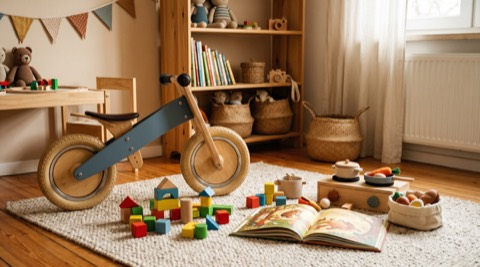
2 Jahre – Empfehlungen für Alltag und Entwicklung
Mehr Bewegung, mehr Sprache, mehr Fantasie: was Zweijährige wirklich lange nutzen.
Jetzt lesen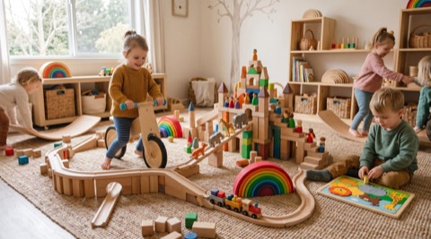
3 Jahre – Ideen für Fantasie, Bauen und Bewegung
Dreijährige brauchen mehr Herausforderung. Diese Spielzeuge wachsen im Alltag mit.
Jetzt lesenRatgeber für Eltern
Praktisches Wissen für den Alltag mit Kleinkindern
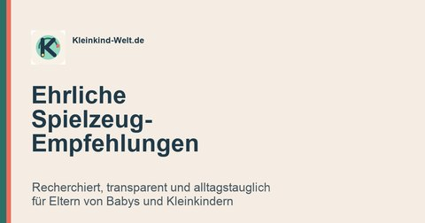
3-Minuten-Check: Spielzeug vor dem Kauf prüfen
Checklisten für Alter, Sicherheit, Fake-Montessori, Geschenkideen und weniger Fehlkäufe.
Sprache fördern: die besten Ideen für 0–3 Jahre
Was wirklich hilft und was nur so aussieht.
Siegel erklärt: CE, FSC, Öko-Tex und GOTS
Was Kennzeichnungen aussagen und wo ihre Grenzen liegen.
Holz vs. Plastik: was ist wirklich besser?
Ehrlicher Vergleich in 6 Kategorien.
Was steckt hinter Montessori?
Welche Prinzipien wirklich zählen und welche Produkte sie umsetzen.
Was wir für Kleinkinder nicht kaufen würden
7 Kategorien, bei denen wir genauer hinschauen.
Spielzeug rotieren: weniger Auswahl, mehr Übersicht
Ein einfacher 15-Minuten-Plan ohne Neukäufe.
Spielideen-Kompass sichern
Altersgerechte Spielideen und Kaufhilfen als PDF per Newsletter.
Alle Empfehlungen nach Alter Von 0 Monaten bis 3 JahreNeu auf Kleinkind-Welt
Zuletzt veröffentlichte Artikel und Vergleiche
Geschenke zum 1. Geburtstag – 15 Ideen, die wirklich ankommen
Lauflernwagen, Bauklötze, Bücher – was Einjährige wirklich fördert und begeistert.
Jetzt lesen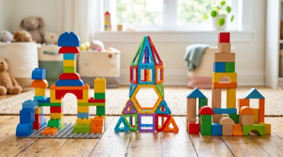
DUPLO Vergleich: Welches Bausystem passt zu euch?
DUPLO, Mega Bloks, Magnetbausteine, Holzbausteine und Kapla im ehrlichen Vergleich.
Jetzt lesen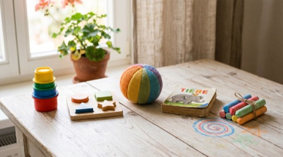
Spielzeug unter 20 Euro – drei ausgewählte Spielideen
Günstig muss nicht beliebig sein: sinnvolle Picks mit starkem Preis-Leistungs-Verhältnis.
Jetzt lesen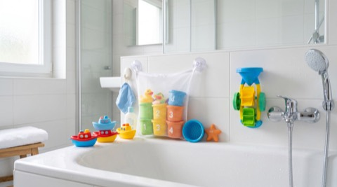
Baden mit Kleinkindern – Empfehlungen für Wanne und Dusche
Was Spaß macht, leicht sauber bleibt und im Badezimmer nicht direkt zur Schimmel-Falle wird.
Jetzt lesen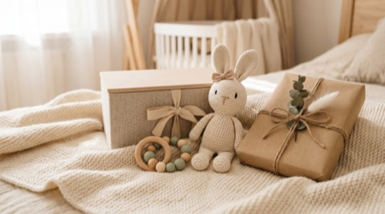
Geschenke zur Geburt: kleine Gesten, große Nähe
Ein Essen, erste Bilderbuchzeit oder ein erfüllter Wunsch. Drei persönliche Ideen für den neuen Anfang.
Jetzt lesenWas macht eine gute Kaufhilfe für Familien aus?
Viele Eltern stehen vor demselben Problem: ein überwältigender Markt, schwer vergleichbare Varianten und Empfehlungen ohne Bezug zum eigenen Alltag. Kleinkind-Welt startet deshalb nicht bei Marken oder Rabatten, sondern bei der Frage, was für Kind und Familie tatsächlich passen muss.
Vier Fragen stellen wir bei jeder Empfehlung
- Passt es zum Kind? Alter, Entwicklungsphase und Herstellerfreigaben bilden den Ausgangspunkt – ohne fachliche Diagnose zu behaupten.
- Passt es zum Alltag? Wohnung, Wege, Platz, Transport und tatsächliche Nutzung können wichtiger sein als eine lange Funktionsliste.
- Was kostet die nutzbare Lösung? Wir betrachten benötigte Konfiguration und Zubehör statt nur eines werblichen Einstiegspreises.
- Was bleibt ein Kompromiss? Nachteile, fehlende Daten und offene Prüfungen werden sichtbar statt in einer pauschalen Bestenauszeichnung zu verschwinden.
Recherchebasierte Einordnungen kennzeichnen wir als solche. Eigene Nutzungserfahrung, Herstellerangaben, Händlerdaten, Rezensionen und externe Prüfungen werden nicht miteinander vermischt. Für sicherheitsrelevante Orientierung nutzen wir je Kategorie offizielle bzw. fachlich verantwortete Quellen wie Mehr Sicherheit für Kinder. Die vollständige Logik steht in unserer Bewertungsmethode.